Introduction
In the world of data science, the cleanliness of your dataset can mean the difference between clarity and confusion. Today, let’s look at a dataset derived from fiber optic testing. Our mission: to use Power BI to transform this raw data into a clear, analyzable format. Let’s walk through the steps taken to achieve a pristine dataset ready for insightful analysis.
Step 1: Importing the Workbook into Power BI
The first step is to bring our data into the Power BI environment. We do this by importing the Excel workbook that contains our fiber optic test data. This is done using the Excel.Workbook function, which takes the file path as a parameter and loads the content.
= Excel.Workbook(File.Contents("C:\Users\zeony\Downloads\Vlad Fast Report\REFX07 Cable_ Fiber100.xlsm"), null, true)
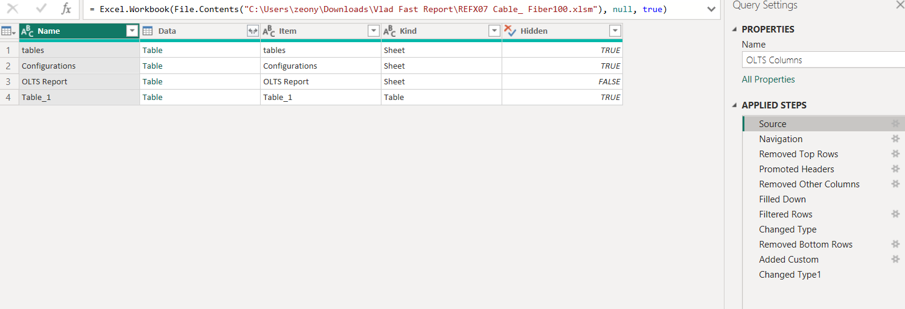
This function navigates to the specified file path, reads the contents of the workbook, and imports the data, setting the stage for the next steps.
Step 2: Selecting the Data
Next, we locate and select the specific sheet named OLTS Report that contains the data we want to analyze. The data is raw at this point, containing all the information from the sheet.
= Source{[Item="OLTS Report",Kind="Sheet"]}[Data]
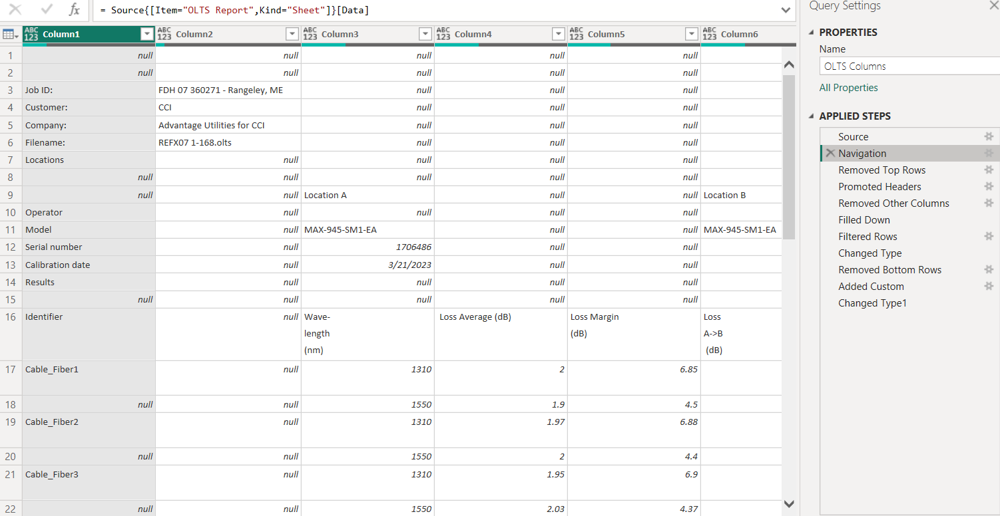
The snippet accesses the OLTS Report sheet within the workbook and extracts all the data from it.
Step 3: Skipping Unneeded Rows
Our raw data inclused headers and metadata that aren’t necessary for analysis. We remove these by skipping the first 15 rows.
= Table.Skip(#"OLTS Report_Sheet",15)
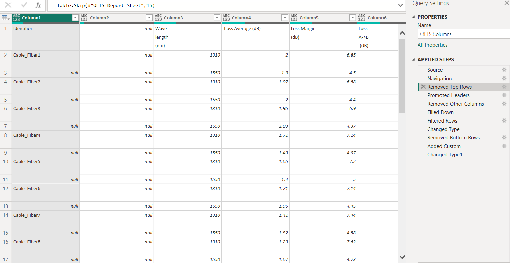
The Table.Skip function is used to bypass the first 15 rows of the dataset, which helps in focusing on the data that is actually needed.
Step 4: Establishing Headers
For our data to be properly organized, we need to promote the first row of our dataset to serve as the headers for our table.
= Table.PromoteHeaders(#"Removed Top Rows", [PromoteAllScalars=true])
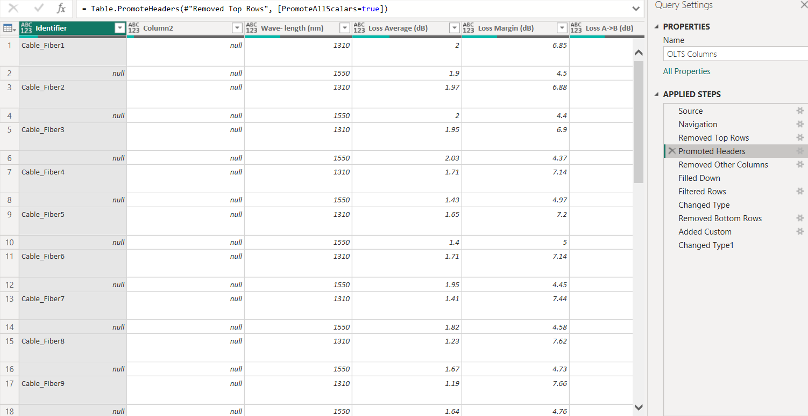
The Table.PromoteHeaders function converts the first row of our adjusted dataset into column headers, giving us a clear, labeled structure to work with.
Step 5: Selecting Relevant Columns
To streamline our dataset, we select only the columns that are necessary for our analysis, removing any extraneous information.
= Table.SelectColumns(#"Promoted Headers",{"Identifier", "Wave-#(lf)length #(lf)(nm)", " Loss Average (dB)", "Loss Margin#(lf)(dB)", "Loss #(lf)A->B#(lf) (dB)", "Loss #(lf)B->A #(lf)(dB)", "ORL#(lf) A#(lf) (dB)", "ORL#(lf) B#(lf)(dB)", "Length #(lf)#(lf)(ft)", "Date/Time"})
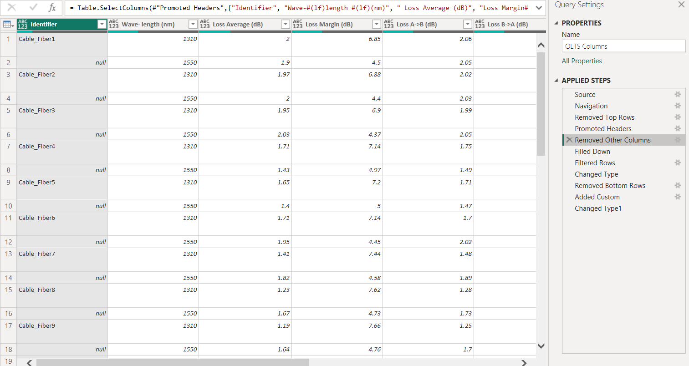
The Table.SelectColumns function allows us to specify exactly which columns to retain in our dataset, ensuring that we’re working only with data that’s relevant to our analysis goals.
Step 6: Filling Down Identifiers
In some cases, our dataset may have missing values that can be inferred from the data above. We use the Table.FillDown function to fill these gaps.
= Table.FillDown(#"Removed Other Columns",{"Identifier", "Date/Time"})
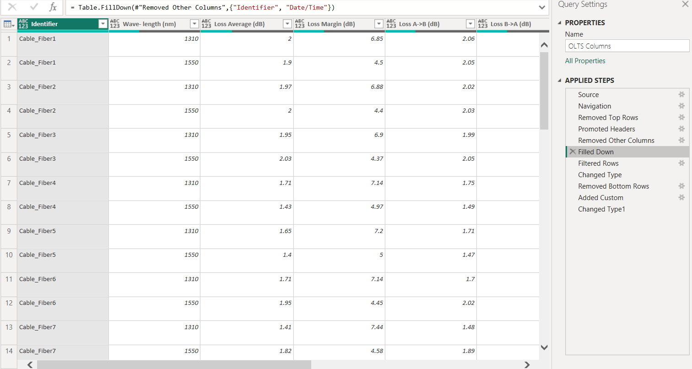
This function ensures that for any missing entries in the Identifier and Date/Time columns, the value from the previous row is carried down.
Step 7: Filtering Out Irrelevant Rows
We filter out rows with identifiers that aren’t necessary for our analysis, such as test identifiers or default values that don’t hold actual test data.
= Table.SelectRows(#"Filled Down", each ([Identifier] <> 1310 and [Identifier] <> 1550 and [Identifier] <> "1310" and [Identifier] <> "1550" and [Identifier] <> "Default" and [Identifier] <> "Loopback" and [Identifier] <> "Pass/Fail Thresholds" and [Identifier] <> "Reference" and [Identifier] <> "Reference Method" and [Identifier] <> "Wavelength#(lf)(nm)"))
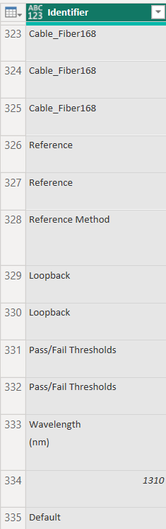
The Table.SelectRows function is applied with a condition that excludes rows with certain Identifier values, cleaning up our dataset further.
Step 8: Transforming Column Types
Data types are crucial for accurate analysis. We convert the data in each column to the appropriate data type, such as text, numbers, or dates.
= Table.TransformColumnTypes(#"Filtered Rows",{{"Identifier", type text}, {"Wave-#(lf)length #(lf)(nm)", Int64.Type}, {" Loss Average (dB)", type number}, {"Loss Margin#(lf)(dB)", type number}, {"Loss #(lf)A->B#(lf) (dB)", type number}, {"Loss #(lf)B->A #(lf)(dB)", type number}, {"ORL#(lf) A#(lf) (dB)", type number}, {"ORL#(lf) B#(lf)(dB)", type number}, {"Length #(lf)#(lf)(ft)", type number}, {"Date/Time", type datetime}})
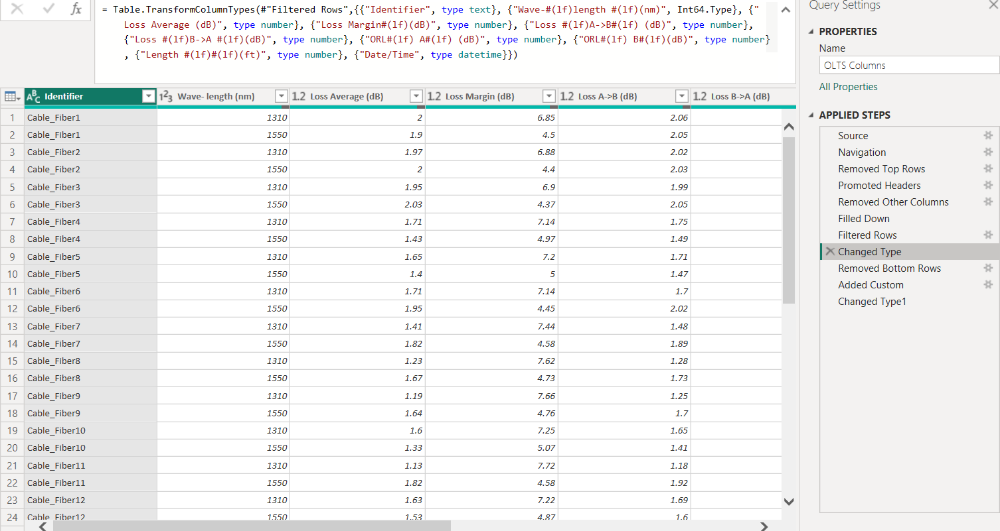
This step ensures that each column in our dataset is treated correctly by Power BI during any subsequent operations or analyses.
Step 9: Removing the Last Row
Sometimes, the last row of data contains summary or footer information that isn’t part of the actual dataset.
= Table.RemoveLastN(#"Changed Type",1)
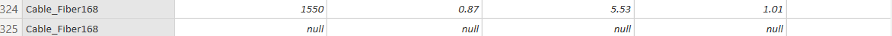
By using Table.RemoveLastN, we remove this last row from our dataset to maintain data integrity.
Step 10: Adding a Cable Number Column
To make our analysis more granular, we add a column that uniquely identifies each fiber optic cable.
= Table.AddColumn(#"Removed Bottom Rows", "CableNumber", each Number.FromText(Text.AfterDelimiter([Identifier], "Cable_Fiber")))
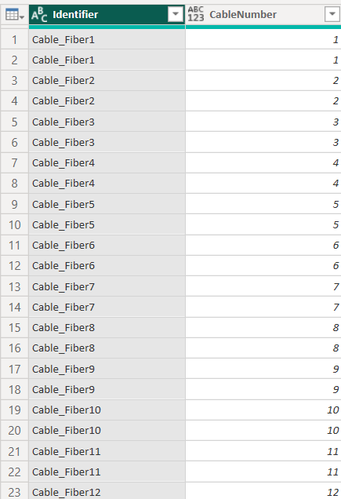
Step 11: Transforming Data Type
As we wrap up this segment of our data journey in Power BI, let’s reflect on the significance of what we’ve accomplished so far. We have successfully navigated the intricate process of cleaning and structuring our fiber optic data. Particularly, by transforming the CableNumber column to an integer data type, we’ve laid the groundwork for accurate, meaningful analyses:
= Table.TransformColumnTypes(#"Added Custom",{{"CableNumber", Int64.Type}})
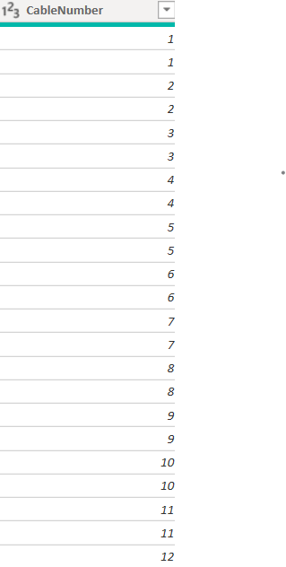
This step, while technical, is pivotal. It underscores the essence of data preparation – ensuring that each piece of data is in its most useful form. The ‘CableNumber’ column, now accurately recognized as numerical data, will serve as a key pillar in our subsequent data exploration.
Looking Ahead: What’s Next?
In our next blog post, we’ll look at the exciting world of sorting and organizing data in Power BI. We’ll explore how the newly transformed CableNumber column unlocks new possibilities for sorting our dataset. This is where our data starts to reveal its true potential, allowing us to gain clearer insights and make informed decisions.